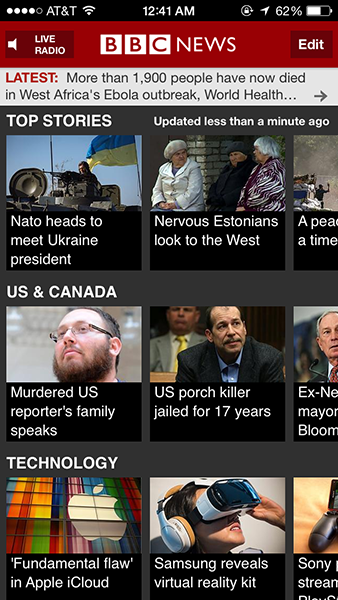

Similar to the government site, Amazon has a lot of information at once but there is somethings that are unified together and visual interesting. However, it has a lot of stuff, it has also some visual hierarchy issues. But Amazon has simple typography and bold text that makes it very easy and simple to navigate through the mass of information. It also has a lot of visuals and products that are personalized and immediately graps my attention.

I like to read the news a few times a day to keep myself busy when I have nothing to do. This app is one of my favorite because the interface and the way that guides my hand is easy. the sideway sliding was really useful for someone who is lazy. I also like how its not at all glitchy and very calming colors but yet has an urgengy to them.